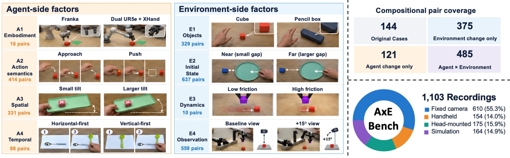
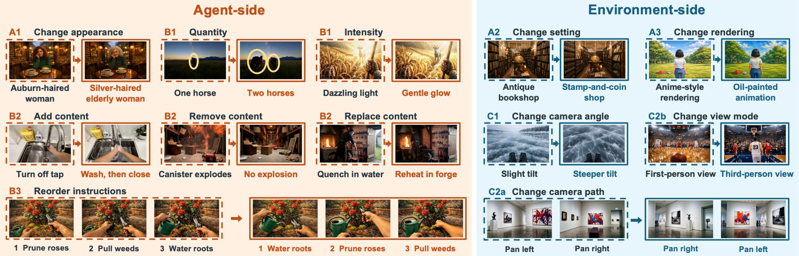
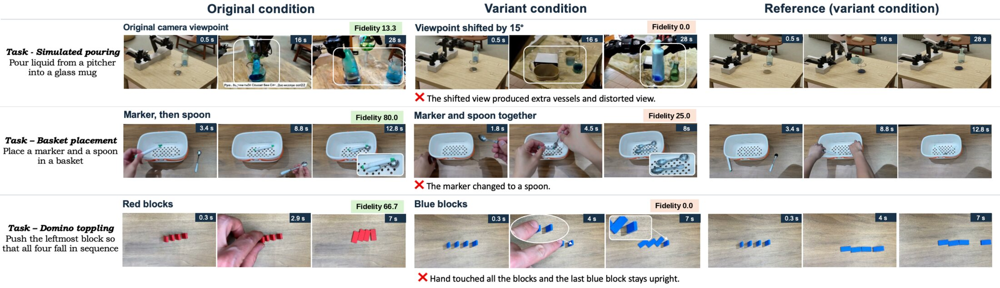
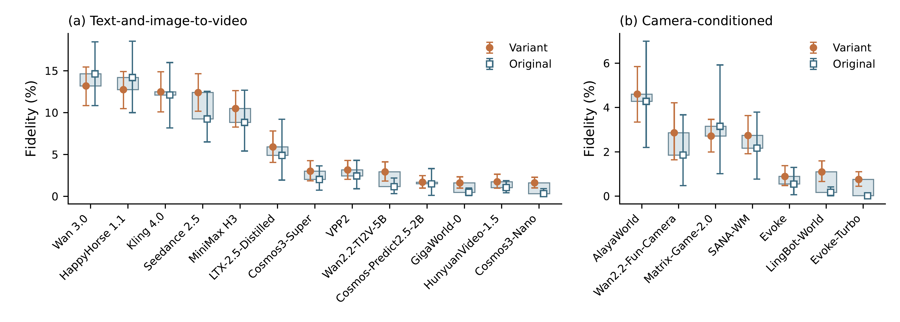
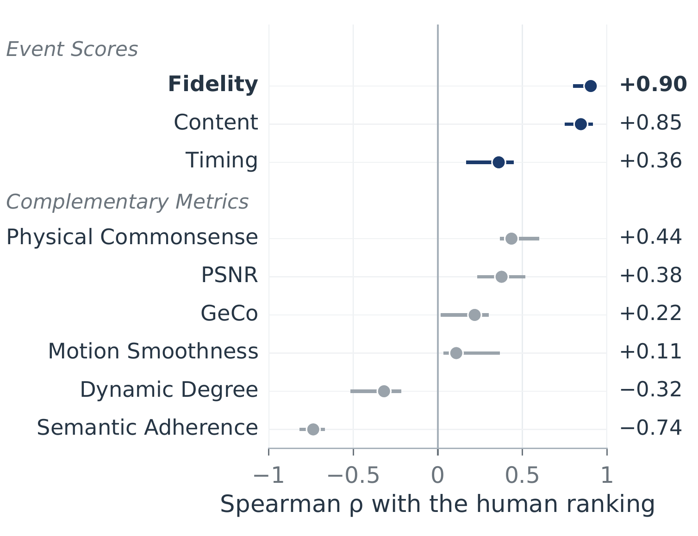
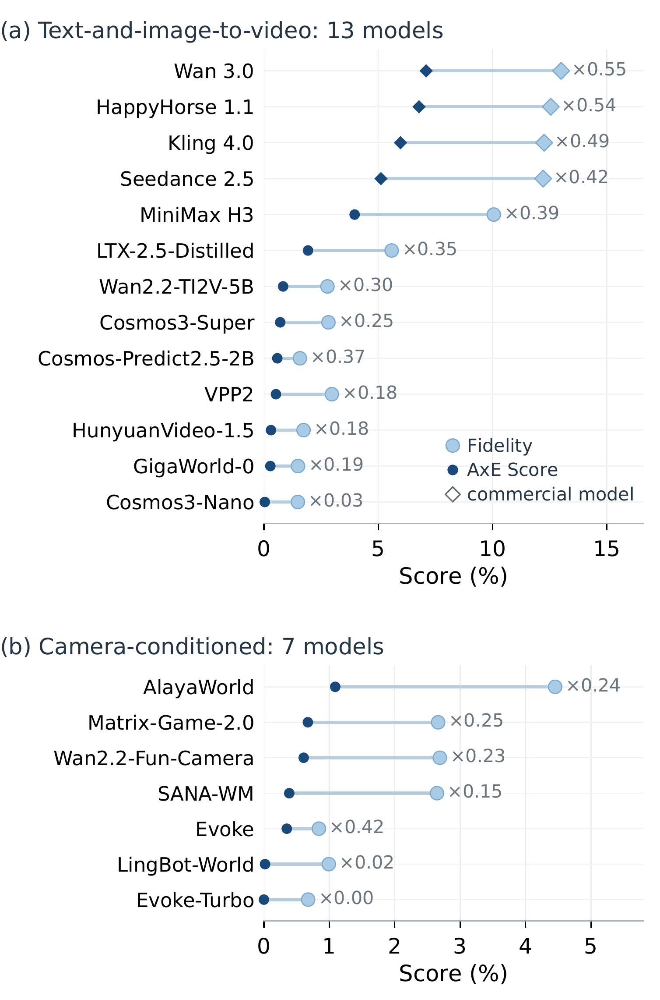

AxE: Benchmarking Agent–Environment Generalization of Video World Models via Grounded Events
Abstract
Edge cases are not the long tail; they are the norm. An embodied system deployed across changing environments, bodies, objects, and tasks will routinely encounter combinations that were absent from its training data. General-purpose physical intelligence therefore requires world models that reuse prior knowledge, predict consequences, and adapt with little or no additional training. Yet current evaluations of conditional video generation emphasize visual quality, prompt alignment, or isolated physical plausibility, leaving systematic generalization difficult to measure.
We introduce AxE Bench, a benchmark that organizes condition changes along eight factors of the acting agent and of its environment, and pairs every original condition with controlled variants that change one side or both. WBench-plus applies the same structure to an existing multi-turn benchmark, pairing each WBench scenario with variants on the environment side, through its world setting or camera behavior, or on the agent side, through its interaction instructions. To score generated futures, we develop an evaluation harness that combines vision-language reasoning with targeted computer-vision evidence, converting each video into temporally localized events and comparing generated events with reference events in both time and semantics.
We summarize each model with the AxE Score, event Fidelity weighted by its Stability across original–variant pairs. Across twenty models, generated events match reference events far more often in timing than in content: no model exceeds a Fidelity of 13.01, the highest Stability is 0.55, and the highest AxE Score is 7.10. Together, these components turn world-model generalization from an informal aspiration into a falsifiable evaluation program for real and simulated interactions.
The Agent × Environment Generalization Space
Every change is described relative to an original condition. Agent-side factors are embodiment, action semantics, spatial and temporal structure; environment-side factors are objects, initial state, dynamics and observation. Which side a variant changes defines four regimes: original, agent generalization, environment generalization, and agent–environment composition.

Data taxonomy and coverage. Eight factor families, each shown with an original–variant pair and the number of pairs that change it, and the breakdown of recordings by capture setup.

WBench-plus. Representative original–variant pairs built on WBench scenarios. Agent-side variants change interaction instructions; environment-side variants change the world setting, rendering, or camera behavior.
Grounded Event Evaluation
A vision-language model turns each video into timestamped events: it drafts events and flags claims that need checking, gathers question-driven SAM evidence (target selection, mask check, local tracking) for those claims, and revises the events with the accepted evidence. Generated events are then matched to reference events in both timing and content, giving the event Fidelity. Stability measures how well Fidelity holds across original–variant pairs.
AxE Score = Fidelity × Stability

Leaderboard
Event scores ×100 on the 1,103 recordings; Stability on the 981 pairs. Rows sorted by Fidelity, as in the paper. Best per group in bold.
Text-and-image-to-video
| Model | AxE Score ↑ | Fidelity ↑ | Stability ↑ | Timing ↑ | Content ↑ |
|---|---|---|---|---|---|
| Wan 3.0 | 7.10 | 13.01 | 0.55 | 49.71 | 26.16 |
| HappyHorse 1.1 | 6.79 | 12.55 | 0.54 | 52.92 | 23.72 |
| Kling 4.0 | 5.98 | 12.26 | 0.49 | 49.92 | 24.56 |
| Seedance 2.5 | 5.12 | 12.22 | 0.42 | 52.26 | 23.38 |
| MiniMax H3 | 3.97 | 10.06 | 0.39 | 52.04 | 19.30 |
| LTX-2.5-Distilled | 1.93 | 5.59 | 0.35 | 41.06 | 13.61 |
| VPP2 | 0.53 | 2.98 | 0.18 | 45.02 | 6.57 |
| Cosmos3-Super | 0.72 | 2.82 | 0.25 | 43.31 | 6.52 |
| Wan2.2-TI2V-5B | 0.84 | 2.78 | 0.30 | 38.75 | 7.18 |
| HunyuanVideo-1.5 | 0.31 | 1.73 | 0.18 | 42.39 | 4.09 |
| Cosmos-Predict2.5-2B | 0.59 | 1.57 | 0.37 | 44.75 | 3.52 |
| GigaWorld-0 | 0.28 | 1.49 | 0.19 | 40.95 | 3.61 |
| Cosmos3-Nano | 0.04 | 1.48 | 0.03 | 42.19 | 3.52 |
Camera-conditioned image-to-video
| Model | AxE Score ↑ | Fidelity ↑ | Stability ↑ | Timing ↑ | Content ↑ |
|---|---|---|---|---|---|
| AlayaWorld | 1.09 | 4.45 | 0.24 | 32.32 | 13.78 |
| Wan2.2-Fun-Camera | 0.61 | 2.69 | 0.23 | 46.05 | 5.81 |
| Matrix-Game-2.0 | 0.67 | 2.66 | 0.25 | 31.03 | 8.58 |
| SANA-WM | 0.39 | 2.65 | 0.15 | 45.88 | 5.73 |
| LingBot-World | 0.02 | 0.99 | 0.02 | 41.24 | 2.41 |
| Evoke | 0.35 | 0.84 | 0.42 | 44.57 | 1.89 |
| Evoke-Turbo | 0.00 | 0.68 | 0.00 | 42.98 | 1.54 |
The first four text-and-image-to-video models are commercial. Complementary metrics (PSNR, motion smoothness, semantic adherence, physical commonsense, CamMC, dynamic degree, GeCo) are reported in the paper.
Findings

Typical examples. Key frames for the original condition (left) and the variant condition (middle), with their Fidelity, next to the reference recording of the variant (right). Changed factors: observation, action semantics, and initial state.

Fidelity on original and variant conditions. A model that generalizes scores high on both sides with a small gap; a small gap at a low score does not indicate this.

Agreement with human preference. Spearman ρ between each metric's ranking of nine open models and their ranking by human win rate.

Fidelity and AxE Score. Light markers show Fidelity, dark markers the AxE Score; Stability is printed beside each row.
BibTeX
@article{xu2027axe,
title = {AxE: Benchmarking Agent--Environment Generalization of Video World Models via Grounded Events},
author = {Xu, Haiyu and Chen, Yiyang and Zhou, Jiayi and Ji, Jiaming and Dai, Juntao and Yang, Yaodong and Chen, Boyuan},
journal = {arXiv preprint arXiv:XXXX.XXXXX},
year = {2026}
}